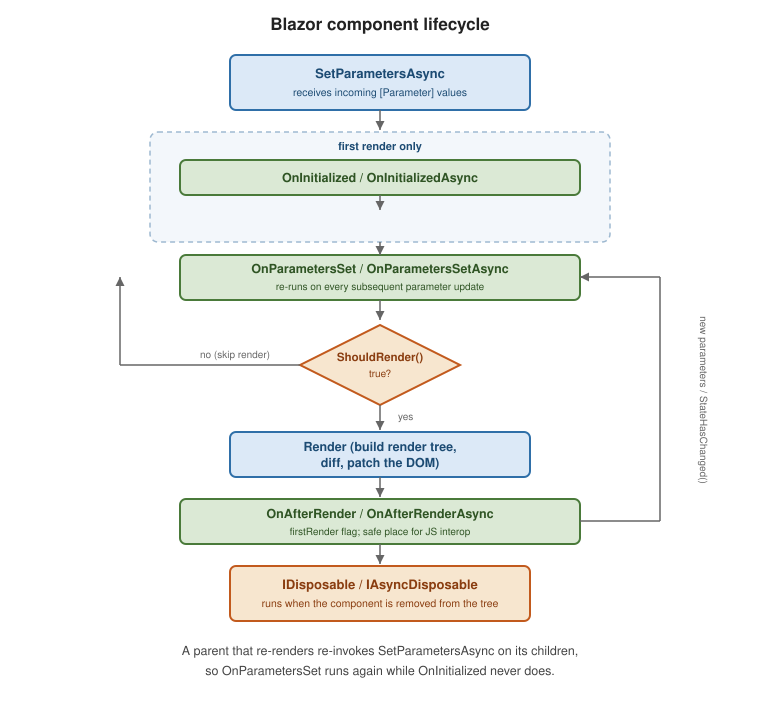

Blazor Components and Lifecycle
|
This content was generated with the assistance of AI and should be verified against the official documentation before being relied on in production. |
A Blazor component is a class that renders a fragment of UI, holds its own state, and reacts to events. This page covers how to author, parameterize, and render components; see Blazor Overview and Render Modes for how a component gets to run on the server vs. in the browser in the first place.
Authoring: markup+@code, partial class, or base class
Most components mix markup and C# in one .razor file with an @code block:
@* ProductCard.razor *@
<div class="card" @key="Product.Id">
<h3>@Product.Name</h3>
<button @onclick="() => OnBuy.InvokeAsync(Product)">Buy</button>
</div>
@code {
[Parameter, EditorRequired] public ProductDto Product { get; set; } = default!;
[Parameter] public EventCallback<ProductDto> OnBuy { get; set; }
}A partial class (ProductCard.razor.cs) moves the @code content into its own file for larger components,
keeping generated designer tooling and diffs cleaner:
// ProductCard.razor.cs
public partial class ProductCard
{
[Parameter, EditorRequired] public ProductDto Product { get; set; } = default!;
[Parameter] public EventCallback<ProductDto> OnBuy { get; set; }
}A base class (@inherits SomeBase) factors shared logic across multiple components, at the cost of an
extra indirection when reading the component:
public abstract class AuditableComponent : ComponentBase
{
[Inject] protected ILogger<AuditableComponent> Logger { get; set; } = default!;
protected override void OnInitialized() => Logger.LogDebug("{Component} initialized", GetType().Name);
}Parameters and cascading values
@code {
[Parameter, EditorRequired] public ProductDto Product { get; set; } = default!;
[Parameter] public EventCallback<ProductDto> OnBuy { get; set; }
[CascadingParameter] public ThemeState? Theme { get; set; }
}-
[Parameter]marks a public property settable by the parent (or by routing/query binding). -
[EditorRequired]flags a missing required parameter at build time (an analyzer warning, not a compile error) rather than failing silently at runtime. -
[CascadingParameter]receives a value from the nearest ancestor<CascadingValue>— or, for app-wide values like the current theme or a feature-flag set, a root-level cascading value registered once inProgram.cs:builder.Services.AddCascadingValue(sp => new ThemeState(Dark: false));
RenderFragment and ChildContent
A component accepts templated markup from its caller via RenderFragment (untyped) or RenderFragment<T>
(typed, exposing a context value to the template):
@* Card.razor *@
<div class="card">@ChildContent</div>
@code { [Parameter] public RenderFragment? ChildContent { get; set; } }<Card><strong>Hello</strong></Card> @* becomes Card's ChildContent *@@* Grid.razor *@
@foreach (var row in Rows)
{
@RowTemplate(row)
}
@code {
[Parameter] public IReadOnlyList<T> Rows { get; set; } = [];
[Parameter] public RenderFragment<T> RowTemplate { get; set; } = default!;
}Lifecycle
| Method | Runs |
|---|---|
|
Whenever the framework has new parameter values for the component; the base implementation applies them and calls the methods below — override it only to intercept parameter assignment itself. |
|
Once, after the first parameters are set — the place to load data the component needs for its whole lifetime. |
|
After |
|
After the component has rendered and the DOM/browser reflects it — the only safe place to call |
|
Called before a render; return |
|
When the component is removed from the render tree — unsubscribe events, dispose timers/streams, cancel in-flight work. |

public sealed partial class LiveTicker : ComponentBase, IAsyncDisposable
{
private Timer? timer;
private decimal price;
protected override void OnInitialized()
=> timer = new Timer(_ => InvokeAsync(Refresh), null, TimeSpan.Zero, TimeSpan.FromSeconds(1));
private async Task Refresh()
{
price = await Prices.GetLatestAsync();
await InvokeAsync(StateHasChanged); // marshal back onto the renderer's sync context
}
public ValueTask DisposeAsync()
{
timer?.Dispose();
return ValueTask.CompletedTask;
}
}StateHasChanged and the render tree
Blazor tracks a virtual render tree per component and diffs it against the previous render to compute the
minimal DOM patch, similar in spirit to a React/Vue virtual DOM. Blazor automatically re-renders a component
after its own event handlers and lifecycle methods run; call StateHasChanged() explicitly only when state
changed from outside that flow — a timer callback, a background service notification, a JS interop
callback — and wrap it in InvokeAsync(...) when the change originates on a different thread than the
renderer’s synchronization context (as in the LiveTicker example above).
@key
@key tells the diffing algorithm which rendered elements/components correspond to which data items across
re-renders, so it can preserve (not recreate) the right DOM nodes and component state when a list is reordered,
filtered, or has items inserted/removed:
@foreach (var item in Items)
{
<ItemRow @key="item.Id" Item="item" />
}Without @key, Blazor matches by position, which can attach the wrong component state to the wrong data after
a reorder. See Use the @key directive.
Built-in components
| Component | Purpose |
|---|---|
|
Renders only the visible slice of a long list, fetching more as the user scrolls. |
|
A first-party, sortable/pageable/virtualizable data grid ( |
|
Catches exceptions thrown while rendering its descendants and shows fallback UI instead of tearing down the whole page/circuit. |
|
Lets a deeply nested component project content into a named placeholder defined higher up the tree (e.g. a page injecting into a layout’s toolbar). |
|
Moves keyboard focus to a heading after a page navigation, for accessibility. |
|
Set |
|
Renders a component whose |
<ErrorBoundary>
<ChildContent><ReportView Data="report" /></ChildContent>
<ErrorContent><p class="text-danger">Could not render the report.</p></ErrorContent>
</ErrorBoundary>
<Virtualize Items="products" Context="p">
<ProductCard Product="p" />
</Virtualize><QuickGrid Items="products.AsQueryable()">
<PropertyColumn Property="@(p => p.Name)" Sortable="true" />
<PropertyColumn Property="@(p => p.Price)" Format="C" />
</QuickGrid>QuickGrid needs the Microsoft.AspNetCore.Components.QuickGrid package. See
QuickGrid component for ASP.NET Core
Blazor.
CSS isolation
A stylesheet named Component.razor.css next to Component.razor is scoped to that component alone — the
build rewrites its selectors with a generated attribute and bundles the result into one file:
/* ProductCard.razor.css */
.card { border: 1px solid #ddd; border-radius: 6px; }No import is needed in the .razor file; the framework wires the scoped stylesheet in automatically and emits
a <link> to the bundled output (\{Assembly}.styles.css) referenced once from the app’s root layout. See
CSS isolation for ASP.NET Core
Blazor components.
Deep dive: a product details component that reloads safely
The lifecycle table says when each method runs. The questions that matter in practice are what runs when a
parent re-renders and what happens when a second request starts before the first finishes. A details panel whose
Id parameter changes as the user clicks through a product list exercises both.
The component instance is reused when the parent renders the same component type at the same position, so
OnInitialized does not run again for Id=2; only OnParametersSet does. Loading in OnInitializedAsync would
therefore show stale data after the parameter changes.
@* ProductDetails.razor *@
@implements IDisposable
@inject IProductService Products
@if (error is not null)
{
<p class="error">@error</p>
}
else if (product is null)
{
<p>Loading...</p>
}
else
{
<h2>@product.Name</h2>
<p>@product.Price.ToString("C")</p>
<button @onclick="() => Added.InvokeAsync(product)">Add to cart</button>
}
@code {
[Parameter, EditorRequired] public int Id { get; set; }
[Parameter] public EventCallback<ProductDto> Added { get; set; }
private ProductDto? product;
private string? error;
private int loadedId = -1;
private CancellationTokenSource? cts;
protected override async Task OnParametersSetAsync()
{
if (Id == loadedId) return; // another parameter changed: nothing to reload
loadedId = Id;
cts?.Cancel(); // abandon the previous request
cts?.Dispose();
var source = cts = new CancellationTokenSource();
product = null;
error = null;
try
{
var loaded = await Products.GetAsync(Id, source.Token);
if (!source.IsCancellationRequested) product = loaded; // ignore a result that arrived too late
}
catch (OperationCanceledException)
{
// superseded by a newer Id; the newer call renders its own result
}
catch (HttpRequestException)
{
error = "The product could not be loaded.";
}
}
public void Dispose()
{
cts?.Cancel();
cts?.Dispose();
}
}The parent supplies the parameter and listens to the callback:
@* ProductPage.razor *@
@page "/shop"
@inject IProductService Products
<ul>
@foreach (var p in all)
{
<li @key="p.Id"><a href="" @onclick="() => selected = p.Id" @onclick:preventDefault>@p.Name</a></li>
}
</ul>
@if (selected is int id)
{
<ProductDetails Id="id" Added="OnAdded" />
}
<p>@cartCount items in the cart</p>
@code {
private IReadOnlyList<ProductDto> all = [];
private int? selected;
private int cartCount;
protected override async Task OnInitializedAsync() => all = await Products.GetAllAsync();
private void OnAdded(ProductDto product) => cartCount++; // the callback re-renders this parent automatically
}Why EventCallback instead of Action
Invoking an EventCallback renders the component that owns the handler afterwards, so cartCount updates on screen
without a manual StateHasChanged. An Action parameter would run the delegate but leave the parent stale. An
unassigned EventCallback is safe to invoke (it does nothing), so a child never needs a null check.
Reducing needless renders
Blazor re-renders a child whenever its parent renders, unless the child’s parameters are all of an immutable,
comparable kind (primitives, strings, enums, DateTime and similar), in which case the framework can skip it. Passing
a List<T>, a delegate that is a new lambda each render, or a RenderFragment forces a render each time. Where a
profile shows this matters, override ShouldRender to compare only what the markup uses, or break a large list into
a child component per row with @key so one changed row does not diff the whole list.